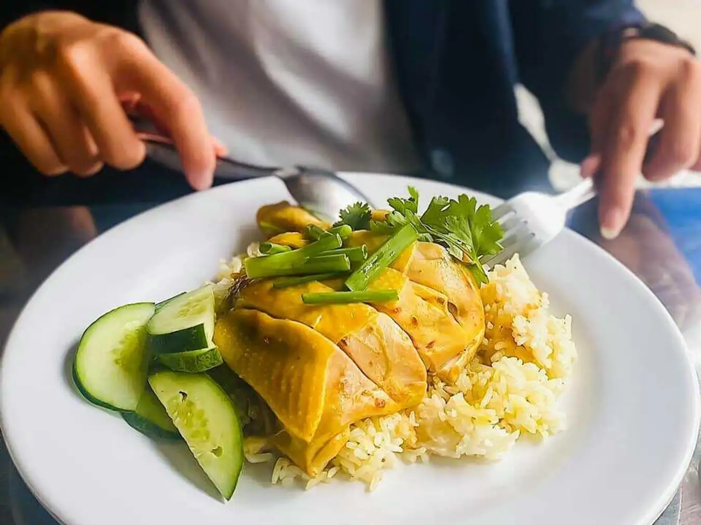

<!DOCTYPE html>
<html lang="en">
<head>
    <meta charset="UTF-8">
    <meta name="viewport" content="width=device-width, initial-scale=1.0">
    <title> Cách chế biến món Cơm gà Phú Yên/title><style>
        
        #header img {
            height:300px;
            width:30%;
            float:left;
            display: flow-root;
        }
        #header h1 {
            color: white;
            font-size: 2vw;
            font-size: 70px;
            margin-top: 90px;
            vertical-align: middle;
        }
        #header {
              background: linear-gradient(-45deg, #0ef412, #e73c7e, #23a6d5, #23d5ab);
              background-size: 400% 400%;
              animation: gradient 10s ease infinite;
              height:300px;
              width: 100%;
              display: flow-root;
        }

        @keyframes gradient { 
           0% {
              background-position: 0% 50%;
                  }
           50% {
               background-position: 100% 50%;
             }
            100% {
                background-position: 0% 50%;
             }
       }
       body {
        background-color: #e2f5e2;
       }
       @keyframes jump {
           0% {
           transform: translateY(0);
             }
           50% {
              transform: translateY(-20px);
             }
           100% {
           transform: translateY(0);
          }
       }

        .text span {
           display: inline-block;
           animation: jump 1s infinite alternate; /* Hiệu ứng nhảy ngược và chuyển động lặp lại */
        }

       .text span {
        font-size: 40px;
        
        color: #db4f09;
       }
       .image {
        border-radius: 30%;
        
       }

       #gioithieu  {
        display: inline-flex; 
        align-items: center; 
       }
       #gioithieu img {
        margin-right: 10px;
       }
       #gioithieu p {
        font-size: 25px;
       }
       #nguyenlieu p {
        font-size: 25px;
       }
       #chebien p{
        font-size: 25px;
       }

       #footer {
        font-size: 25px;
        color: rgb(16, 33, 215);
        text-align: center;
       }
       @keyframes blink {
  0% { opacity: 1; }
  50% { opacity: 0; }
  100% { opacity: 1; }
}

.blink {
  animation: blink 2s linear infinite;
}

    </style>
</head>
<body>
    <div id="header" align="center">
        
        <h1> Cách chế biến món "Cơm gà Phú Yên" </h1>
    </div>
    <div class="text">
        <span>GIỚI THIỆU VỀ MÓN ĂN</span>
        </div>
        <div id="gioithieu">
            
            <p>Cơm gà là một món ăn đặc sản Phú Yên vô cùng nổi tiếng mà những ai du lịch tại đây đều không thể bỏ qua.
                 Thế nhưng, giờ đây bạn vẫn có thể thưởng thức món cơm gà Phú Yên đúng chuẩn ngay tại nhà mỗi khi thèm rồi đấy. </p>
            
            
        </div>
        <div class="text">
            <span>NGUYÊN LIỆU</span>
            </div>
        <div id="nguyenlieu">
            <p>
                <strong>1. Gạo tẻ:  </strong> 500g.<br>
                <strong>2. Gà:</strong> 300g.<br>
               <strong>3. Hành tím, hành tây, sả, dưa leo, ớt, chanh, rau răm, ngò rí.  </strong><br>
               <strong>4. Nước cốt dừa: </strong>300 ml.<br>
               <strong>5. Gừng, bột nghệ. </strong> <br>
               <strong>6. Dầu hào, bột canh, dầu ăn, muối, đường.</strong>
              
        </div>
        <div class="text" align="center">
            <span >CÁCH CHẾ BIẾN</span>
        
            </div>
            <div id="chebien">
               
                <p>
                    <i>Cách chế biến món Cơm gà Phú Yên: </i><br><br>
                   <strong> Sơ chế gà</strong><br>
                   
                   Gà sau khi mua về bạn mang sơ chế sạch sẽ bằng cách dùng gừng tươi và muối trắng chà xát toàn bộ bên ngoài da. Sau đó, rửa lại với 3 - 4 lần nước.<br>
              <strong>     Sơ chế các nguyên liệu khác</strong><br>
                   -Hành tây lột bỏ vỏ khô bên ngoài, cắt thành các lát mỏng. Ngâm hành tây với nước lọc cùng với 1/2 muỗng 
                   cà phê giấm trong vòng 10 phút để giảm bớt mùi hăng của hành.<br>
                   
                   -Tỏi và hành tím lột vỏ, 2 tép tỏi giữ nguyên, còn lại băm nhuyễn.<br>
                   
                   -Sả đập dập. Tương tự như với gừng, bạn gọt vỏ, đập dập.<br>
          <strong>         Trộn gạo</strong><br>
                   -Gạo bạn vo sơ qua một lần nước, sau đó ngâm gạo với nước lần 2 trong vòng 10 - 15 phút để hạt gạo nở ra.<br>
                   
                   -Kế đến cho gạo ra rây lọc, chắt bỏ nước, để gạo ráo.<br>
                   
                   -Tiếp theo, bạn cho vào gạo với 1/2 muỗng cà phê muối, 1 muỗng cà phê bột nghệ, trộn đều cho gạo thấm đều màu.<br>
                   <strong>Luộc gà</strong><br>
                   -Bắc nồi lên bếp, cho khoảng 1 lít nước lọc cùng với gừng vào nồi, đun sôi ở lửa lớn.<br>
                   
                  -Khi thấy nước trong nồi bắt đầu sôi, bạn hạ lửa vừa và chần sơ thịt gà trong vòng 5 - 7 phút, vớt ra.<br>
                   
                   -Bạn đổ bỏ phần nước luộc đi, thay nước mới vào nồi. Cho gà vào luộc chín khoảng 20 - 25 phút, rồi tắt bếp. Vớt gà ra thau để nguội.<br>
                   <strong>Rang gạo và nấu cơm</strong><br>
                   -Bắc chảo lên bếp, cho khoảng 1 muỗng canh dầu ăn vào chảo cùng với tỏi và hành tím. Phi thơm ở lửa vừa.<br>
                   
                   -Kế đến, bạn cho hết phần gạo vào chảo, cho thêm sả và 10ml nước luộc gà vào chảo. Đảo đều và rang
                    ở lửa vừa đến khi phần nước cạn bớt và hạt gạo hơi khô lại thì tắt bếp.<br>
                   
                   -Tiếp theo, cho gạo vào nồi cơm điện, đổ nước luộc gà xâm xấp phần cơm, cách bề mặt cơm khoảng 1 lóng tay. Cho thêm sả vào. Đậy nắp nồi lại, 
                   bật chế độ Cook nấu đến khi nút chuyển sang chế độ Warm tức là cơm đã chín.<br>
                   <strong>Trộn gà</strong><br>
-Gà sau khi nguội, xé sợi ra. Về phần đùi gà, bạn có thể để nguyên đùi hoặc xé ra đều được nha.<br>

-Để làm nước trộn gỏi, bạn cho 2 tép tỏi, 1 trái ớt vào cối, dùng chày giã nhuyễn, rồi cho ra chén đựng.
 Tiếp theo cho vào chén 1 muỗng canh nước dùng gà, 2 muỗng canh nước mắm, 1/2 muỗng canh đường, vắt thêm 1/2 trái chanh (hoặc tắc tùy ý). Khuấy đều hỗn hợp.<br>

-Cuối cùng cho hành tây, rau răm vào tô đựng gà, rưới từ từ nước trộn vào tô, trộn đều và nêm nếm xem đã vừa ăn chưa nhé.<br>
 

            </div>
            <div id="footer">
                <p class="blink">Chúc bạn thưởng thức mỗi miếng ăn với tất cả niềm đam mê và tình yêu dành cho nấu ăn.<br>
                     Hãy tiếp tục khám phá và sáng tạo, bởi cuộc phiêu lưu ẩm thực không bao giờ kết thúc! </p><br>
                    
                     <strong> VNFoods.</strong>
            </div>


        
    
    
</body>
</html>